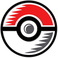

Hardware, accessories, and anything else from Nintendo's own store — same real-time restock alerts as every other game/retailer here, just not a trading card. This is the first non-TCG category in this app; add a product below to start tracking it.